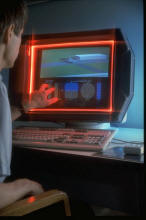
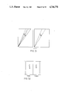

CMU Sensor Frame
The multi-touch system where pinch-to-zoom was born — built from DRAM memory chips, shown to Steve Jobs.

Overview
The Sensor Frame was the first multi-touch system to demonstrate gestural interaction with coordinated graphics. Built at Carnegie Mellon University in 1985 by Paul McAvinney, it was a rectangular metal frame surrounding a CRT monitor, using four corner-mounted sensors to detect finger shadows via optical occlusion. The sensors were off-the-shelf Micron IS32 OpticRAM DRAM memory chips — repurposed from stock because CCD cameras were effectively unavailable in 1985. Their ceramic packages had glass windows that made them naturally photosensitive, turning commodity memory into a crude 128x256-pixel camera array.
The system could track up to three fingers simultaneously, detect the angle at which each finger approached the surface, and recognize a vocabulary of gestures including two-finger rotation, marquee selection, amplitude scaling, and — most notably — pinch-to-zoom, demonstrated with coordinated graphics in 1985. A later NASA-funded variant, the Sensor Cube, extended sensing into 3D, allowing each finger to function as a virtual joystick.
Deep dive
The Sensor Frame's most ingenious technical choice was using Micron IS32 OpticRAM 64K DRAM chips as image sensors. These were standard memory chips in ceramic DIP packages with glass windows — designed for UV-EPROM-style applications, not imaging. McAvinney realized their photosensitivity meant they could serve as crude 2D cameras. Each cell was written to '1', light exposure caused charged cells to leak to '0' at different rates depending on illumination, and the pattern was read back as a shadow image. Four such sensors in the frame's corners tracked finger silhouettes, with angle-side-angle trigonometry computing precise X,Y positions.
Canonical pinch-to-zoom — two fingers moving apart to scale an object — was demonstrated on the Sensor Frame with coordinated graphics in 1985. Patent drawings show two fingers scaling the frequency of a displayed waveform (Figs 15a, 15b of US Patent 4,746,770). Other demonstrated gestures included two-finger knob rotation, marquee-style object selection, and amplitude scaling. The gestures were recognized in software running on a host computer at approximately 30Hz refresh rate.
In October 1985, Steve Jobs visited CMU — months after being ousted from Apple, in the process of founding NeXT. According to CMU's The Link magazine (Summer 2017), Jobs signed a non-disclosure agreement before being allowed to tour the Sensor Frame lab and see the multi-touch technology in action. The visit is cited as evidence that Apple had direct, documented exposure to advanced multi-touch at CMU nearly 22 years before the iPhone's launch.
With NASA SBIR Phase II funding (contract NAS9-18686, circa 1991-92), McAvinney developed the Sensor Cube — a 3D volumetric variant that could detect finger approach angle in three dimensions. Each finger became a virtual joystick with 3D control at the point of contact. NASA was interested for spacecraft crew interfaces and telerobotics control where physical buttons were impractical.
Team & pioneers
- Paul McAvinney. Lead inventor. Designed Sensor Frame hardware and software. Founded Sensor Frame Inc. Later gave TEDxGreenville talk (2014)
- Roger B. Dannenberg. CMU faculty, computer music pioneer, co-creator of Audacity. Co-author on first Sensor Frame paper (ICMC 1984)
- M.T. Thomas. Co-author on 1984 ICMC paper with Dannenberg and McAvinney
- Sharon R. Shepard. Co-assignee on NASA-related patent work
Media

Sources
- Bill Buxton — Multi-Touch Systems that I Have Known and Loved
- US Patent 4,746,770 — Method and apparatus for isolating and manipulating graphic objects on computer video monitor
- Dannenberg, McAvinney & Thomas — 'Carnegie-Mellon University Studio Report' (ICMC 1984)
- O'Connell — 'The Untold History of MultiTouch,' The Link, CMU (Summer 2017)
- McAvinney TEDxGreenville 2014 — 'Future of human/computer interface'
- NASA CR-185416 — Sensor Cube SBIR Phase II Final Report
- Wikipedia — Multi-touch (history section)